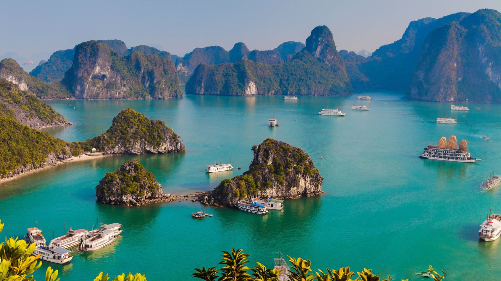
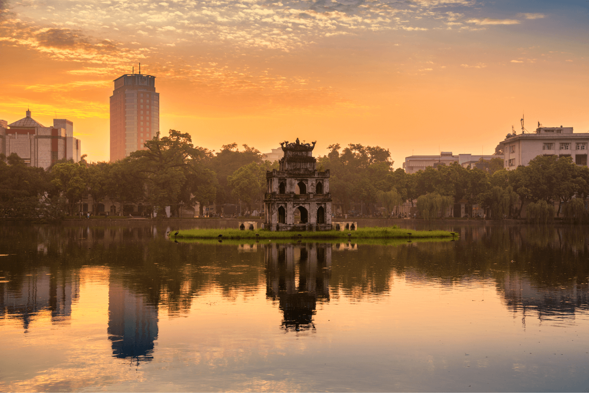
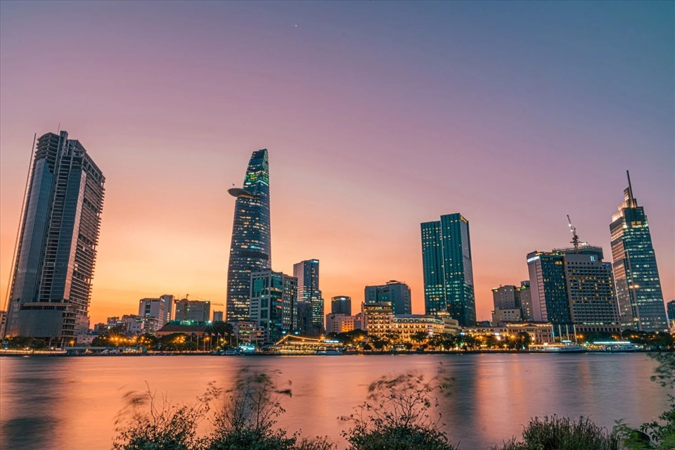
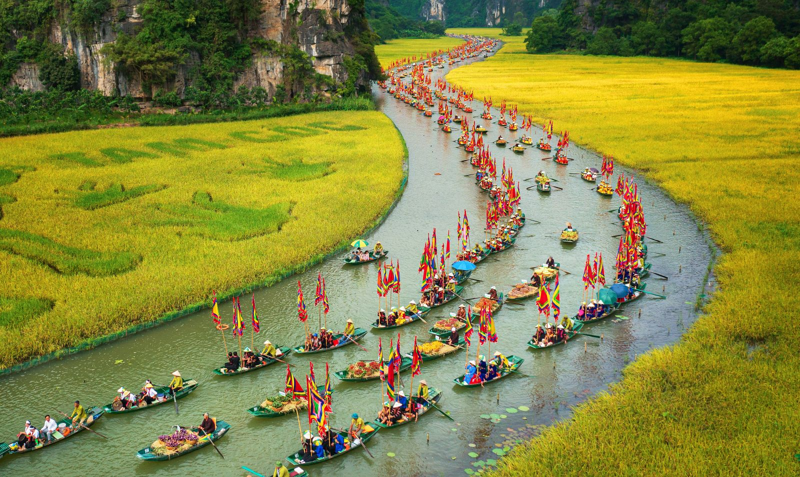
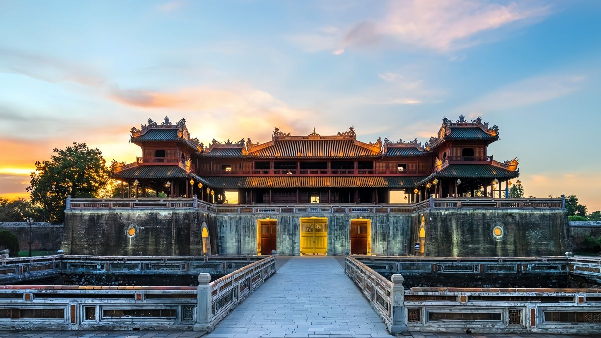

1. Vịnh Hạ Long
Vịnh Hạ Long là kỳ quan thiên nhiên thế giới nổi tiếng với hàng ngàn đảo đá vôi hùng vĩ và làn nước xanh ngọc bích đượm đà nét đẹp Quảng Ninh.

2. Thủ Đô Hà Nội
Mảnh đất ngàn năm văn hiến với những con phố cổ trầm mặc, Hồ Gươm bình yên và nét văn hóa lâu đời ấm áp giữa lòng thủ đô.

3. TP. Hồ Chí Minh
Trái tim kinh tế sôi động nhất Việt Nam với những tòa nhà cao tầng hiện đại, nhịp sống nhộn nhịp cùng ẩm thực đường phố phong phú.

4. Phố Cổ Hội An
Di sản văn hóa thế giới bình yên bên dòng sông Hoài, nổi tiếng với những ngôi nhà cổ vàng óng và ánh đèn lồng rực rỡ về đêm.

5. Thành Phố Đà Nẵng
Thành phố biển đáng sống nhất Việt Nam với Cầu Rồng độc đáo, bãi biển Mỹ Khê xanh mát và Bà Nà Hills tuyệt đẹp.

6. Quần Thể Ninh Bình
Vùng đất được mệnh danh là Hạ Long trên cạn với cảnh sắc sơn thủy hữu tình, Tràng An kỳ vĩ và Cố đô Hoa Lư cổ kính.

7. Cố Đồ Huế
Vùng đất di sản đậm đà bản sắc lịch sử với Đại Nội cổ kính, các lăng tẩm triều Nguyễn và dòng sông Hương mộng mơ.